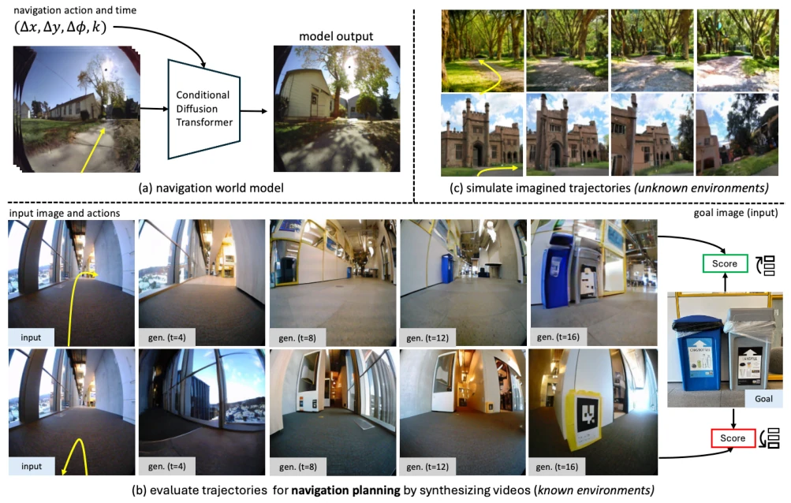
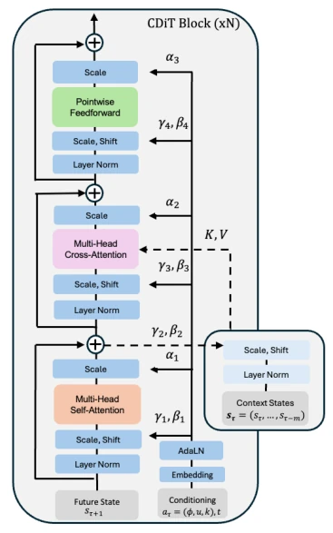
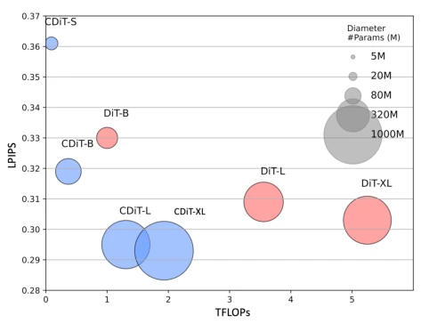
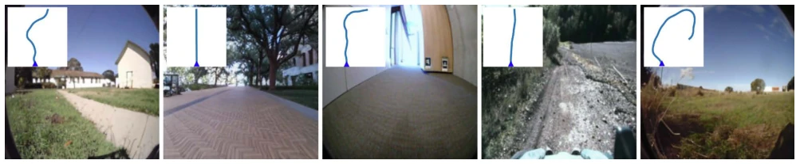
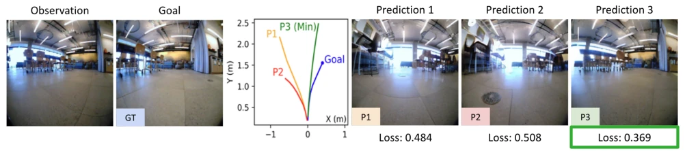
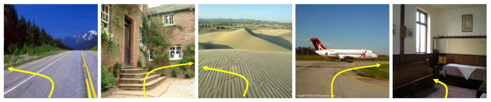
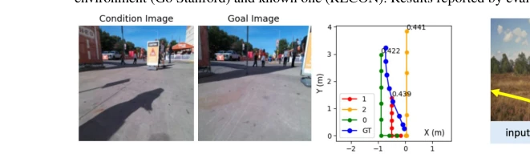
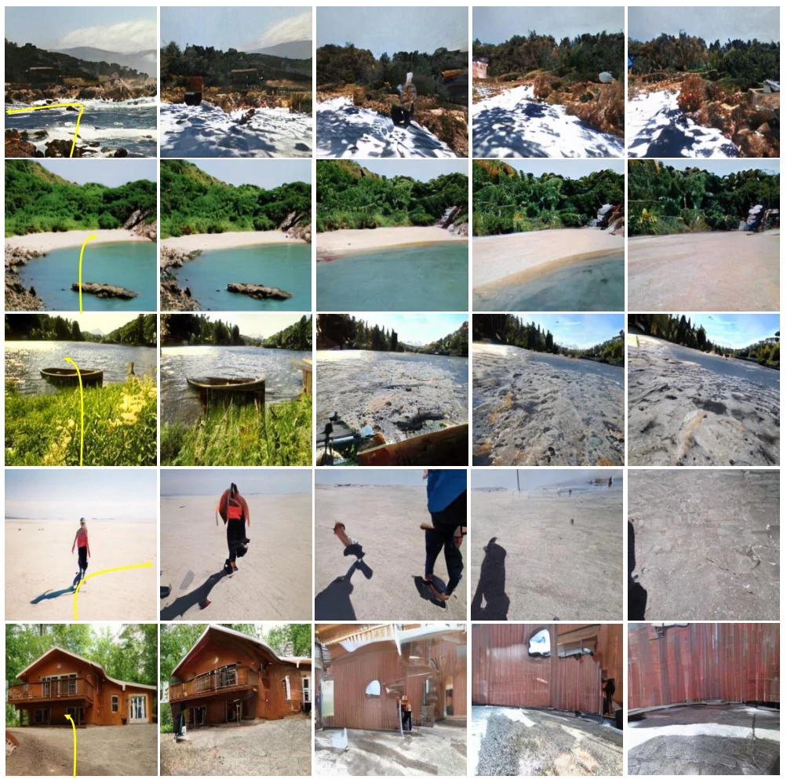
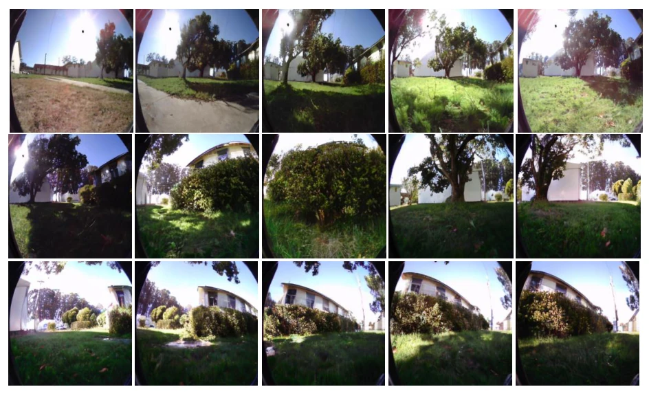
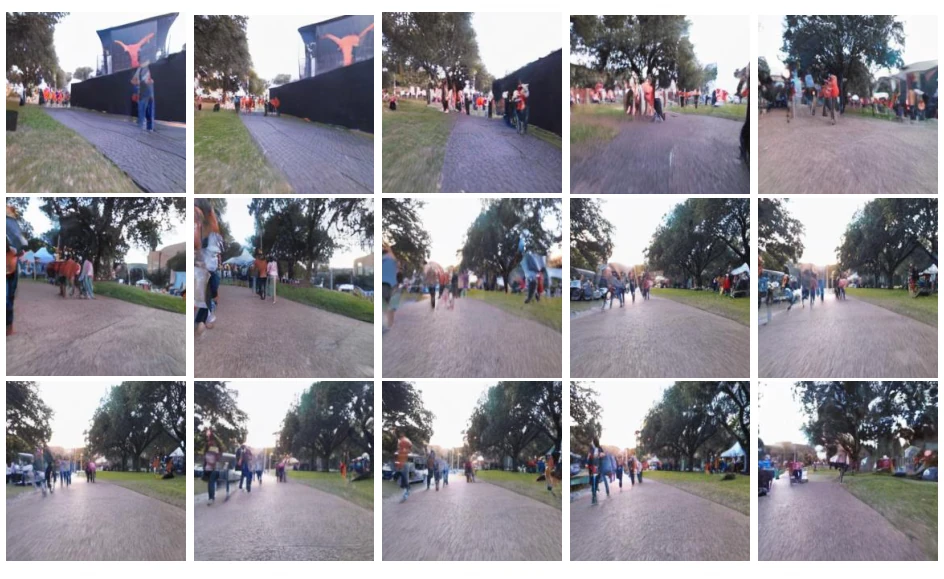

This paper serves another "world model" pie to the embodied navigation community, after all, with Yann LeCun personally leading, who dares not believe it? NWM is essentially a video generator that can "dream", using Diffusion Transformers to predict future frames. The highlight is the CDiT architecture, reducing computational complexity from quadratic to linear; running with 1 billion parameters is 4 times faster than DiT, this point is indeed appealing. However, a critique is that the so-called "imagination in unknown environments" is actually mode collapse under OOD, do not overhype it. Planning capability is indeed strong, can add constraints, but relies on MPC sampling, inference speed is likely to become a bottleneck. Overall, it is a solid video prediction + planning work, but far from true general intelligence.
Existing visual navigation strategies (such as NoMaD [55]) are mostly "hard-coded" behaviors learned through supervised learning; once training is complete, it is difficult to dynamically add new constraints (such as "no left turn"). Moreover, they cannot dynamically allocate computational resources according to problem difficulty. World Models theoretically can simulate environment dynamics and assist planning, but previous work (such as DIAMOND [1]) is mostly limited to games or specific tasks. This paper aims to design a universal, scalable navigation world model that can "pre-simulate" future trajectories like humans and flexibly adapt to different environments and constraints, solving the problem that traditional strategies lack interpretability and flexibility.

Figure 1. We train a Navigation World Model (NWM) from video footage of robots and their associated navigation actions (a). After training, NWM can evaluate trajectories by synthesizing their videos and scoring the final frame’s similarity with the goal (b). We use NWM to plan from scratch or rank experts navigation trajectories, improving downstream visual navigation performance. In unknown environments, NWM can simulate imagined trajectories from a single image (c). In all examples above, the input to the model is the first image and actions, then the model auto-regressively synthesizes future observations. Click on the image to view examples in a browser.
The overall process is divided into training and inference planning. In the training phase, the model receives past frame encodings (VAE latent) and navigation actions (translation + yaw), predicting the next frame through Conditional Diffusion Transformer (CDiT). The innovation lies in the CDiT architecture: compared to standard DiT, it limits the first layer attention to only target frames, processes historical frames through cross-attention, making complexity grow linearly with the number of context frames rather than quadratically, saving 4 times FLOPs. Inputs include actions, time offset, and diffusion steps. In the inference phase, when used for planning, it adopts a Model Predictive Control (MPC) framework, using cross-entropy methods to optimize action sequences, minimizing the perceptual distance (LPIPS) between the final frame and target frame and constraint penalties; when used to enhance existing strategies, it samples external strategy trajectories, simulates and scores/ranks them using NWM.

Figure 2. Conditional Diffusion Transformer (CDiT) Block. The block’s complexity is linear with the number of frames.

Figure 5. CDiT vs. DiT. Measuring how well models predict 4 seconds into the future on RECON. We report LPIPS as a function of Tera FLOPs, lower is better.
Experiments are conducted on SCAND, RECON and other robot datasets as well as Ego4D. Baselines include DIAMOND [1], GNM [53], NoMaD [55]. Metrics cover ATE, RPE, and video quality (FVD, LPIPS). Results show that NWM independent planning performance is better than NoMaD (ATE 1.13 vs 1.93), and it can combine NoMaD sampled trajectories for optimization. Ablation experiments show that increasing context frame count and multi-object training can significantly improve prediction accuracy. In unknown environments (Go Stanford), prediction ability is enhanced after adding unlabeled Ego4D data, but mode collapse phenomenon exists.

Figure 3. Following trajectories in known environments. We include qualitative video generation comparisons of different models following ground truth trajectories. Click on the image to play the video clip in a browser.

Figure 7. Ranking an external policy’s trajectories using NWM. To navigate from the observation image to the goal, we sample trajectories from NoMaD [55], simulate each of these trajectories using NWM, score them (see Equation 4), and rank them. With NWM we can accurately choose trajectories that are closer to the groundtruth trajectory. Click the image to play examples in a browser.

Figure 8. Navigating Unknown Environments. NWM is conditioned on a single image, and autoregressively predicts the next states given the associated actions (marked in yellow). Click on the image to play the video clip in a browser.

Figure 9. Planning with Constraints Using NWM. We visualize trajectories planned with NWM under the constraint of moving left or right first, followed by forward motion. The planning objective is to reach the same final position and orientation as the ground truth (GT) trajectory. Shown are the costs for proposed trajectories 0, 1, and 2, with trajectory 0 (in green) achieving the lowest cost.

Figure 11. Navigating Unknown Environments. NWM is conditioned on a single image, and autoregressively predicts the next states given the associated actions (marked in yellow) up to 4 seconds and 4 FPS. We plot the generated results after 1, 2, 3, and 4 seconds.

Figure 12. Video generation examples on RECON. NWM is conditioned on a single first image, and a ground truth trajectory and autoregressively predicts the next up to 16 seconds at 4 FPS. We plot the generated results from 2 to 16 seconds, every 1 second.

Figure 13. Video generation examples on SCAND. NWM is conditioned on a single first image, and a ground truth trajectory and autoregressively predicts the next up to 16 seconds at 4 FPS. We plot the generated results from 2 to 16 seconds, every 1 second.